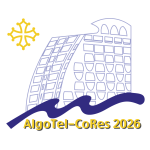
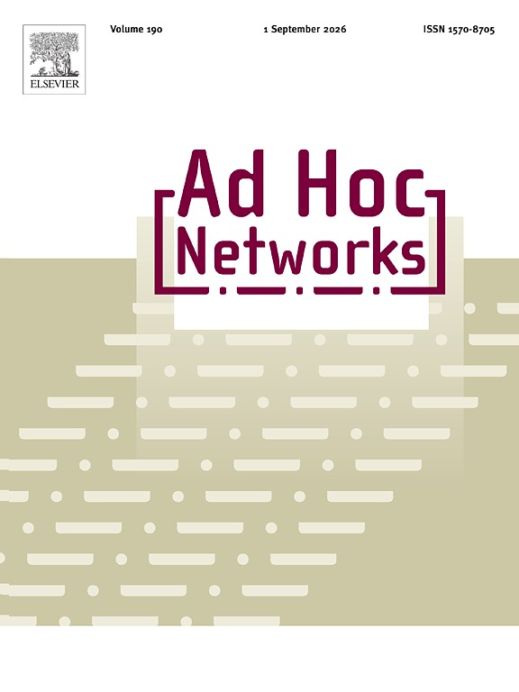
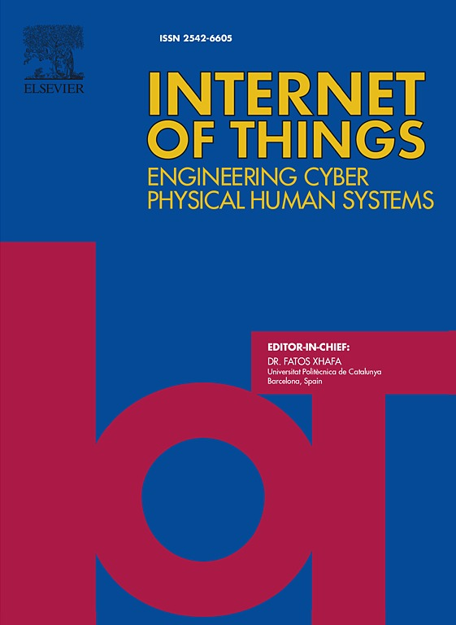
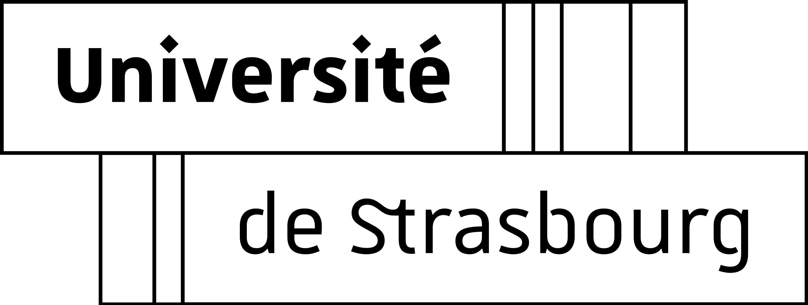

Best Paper Award
I had the opportunity to participate in CoRes 2026, the francophone conference dedicated to protocol design and communication performance evaluation. During the conference, I presented my paper that is part of my PhD thesis work, which I plan to defend next September. I am very happy and honored to share that my paper received the "Best Paper Award".

Published Paper
My new paper (FINE-STACK) is accepted in Ad Hoc Network Journal, available online now .

Published Paper
My new paper—part of my PhD research—published in Elsevier Internet of Things Journal and it is available online now .
Paper Presented
I presented my paper "Programmable Solutions for Low-power Lossy Wireless Networks: A Study of SDN and Femto Containers" in The 39th International Conference on Advanced Information Networking and Applications (AINA-2025), Open University of Catalonia, Barcelona, Spain.
Conference Paper Accepted
My paper "Programmable Solutions for Low-power Lossy Wireless Networks: A Study of SDN and Femto Containers" has been accepted in The 39th International Conference on Advanced Information Networking and Applications (AINA-2025), Open University of Catalonia, Barcelona, Spain. It is my first PhD's international paper.
Journal Paper Accepted
My paper "The Role of SDN to Improve Client Selection in Federated Learning" has been accepted in IEEE Communications Magazine prestigious magazine, the paper is part of my Master's thesis prepared at Università della Calabria.
Paper Available Online
My paper entitled "SDN-Assisted Client Selection to Enhance the Quality of Federated Learning Processes" is available now online on IEEE Xplore , the paper is part of my Master's thesis prepared at Università della Calabria.

New Position
I started my new research journey in ICube Lab in the University of Strasbourg under the supervision of Prof. Julien Montavont and Prof. Thomas Noel . PhD Topic: Software Defined Low-power Lossy Wireless Networks (SD-LLWNs).
Graduation
I graduated from the University of Calabria in MSc Degree in Telecommunication Engineering: Smart Sensing, Computing and Networking. My Master Thesis was about Improving the Quality of Federated Learning using Programmable Networks under the supervision of Prof. Pasquale Pace and Prof. Antonio Iera .